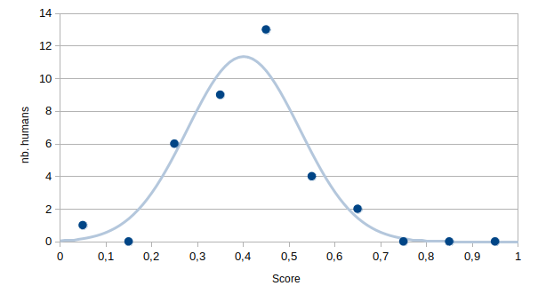
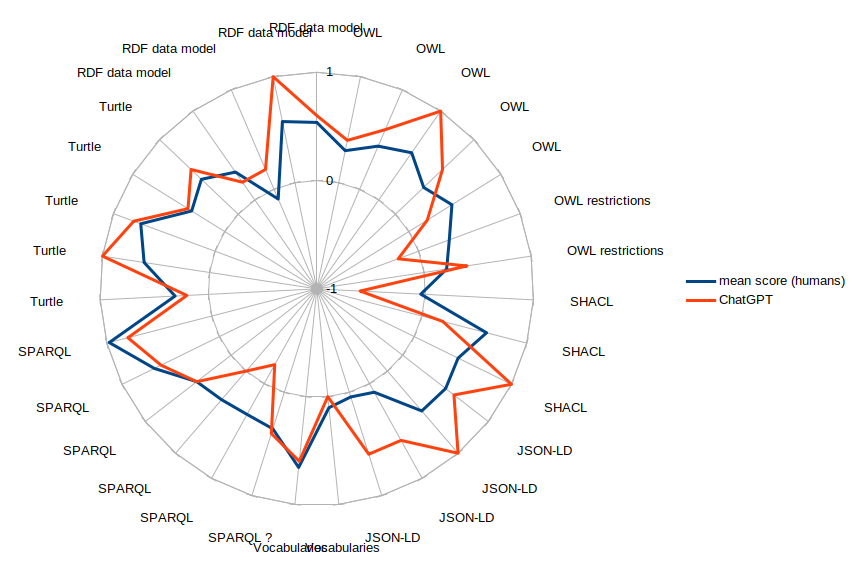

January 2020
ChatGPT seems to know a few things about Semantic Web technologies. Below is the distribution of grades obtained by 35 master-level students after a 40-hours class on the Semantic Web. Grades are normalized (between 0 and 1).
The mean human score is 0.4. ChatGPT got a score of 0.45. If one looks at detailed scores for each question, a pattern seems to emerge. Below is the comparison of average scores obtained by the students for each question and scores obtained by ChatGPT. Each question is a multiple-choice question. Scores are zero if no answer is given, they are negative if only wrong answers are given.
For most questions, despite the fact that ChatGPT always gives an answer (it won't say "I don't know"), it gets scores above zero. In addition, a pattern seems to emerge: for most questions, ChatGPT is above average but it clearly fails on few questions. Interestingly, it is below average at least once per family of questions ("RDF data model", "OWL", "OWL restrictions", etc.), as if it lacked consistency in its answers.
A reasonable assumption is that ChatGPT has good chances to answer correctly but it will randomly fail (with probability around 0.2). To test that hypothesis, the same question should be submitted repeatedly to ChatGPT. At some point, ChatGPT should contradict itself.
Another reasonable assumption is that the order in which questions are submitted matters. Here, questions within the same family are randomized, the order in which ChatGPT answered them isn't available.